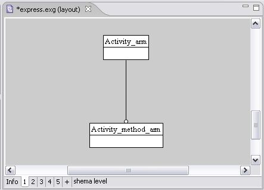

Make Page Frame Invisible/Visible
Make page frame invisible
Make page frame visible
Make Page Frame Invisible
You can make an applicable page frame in the
Editor
panel to be invisible for printing. It means you can view the content of the invisible page frame, but while printing this page frame will be skipped.
Right click on a page frame you want to be invisible. A
context sensitive menu
appears.
Select the
Make invisible
menu item. The background of the selected page frame becomes of gray colour (see
Figure 1
).

Figure 1.
Invisible page
To top
Make Page Frame Visible
If you have an invisible page frame on the Editor panel, you can to make it visible for printing:
Right click on the invisible page frame. A
context sensitive menu
appears.
Select the
Make visible
menu item.
To top
Copyright © 2005-2008
LKSoftWare GmbH
. All Rights Reserved.
JSDAI is a registered trade mark of LKSoftWare GmbH.